입원 안내
수술을 마치신 후나 항암·방사선 치료를 받으시는 동안 입원해서 회복을 이어 가실 수 있습니다. 입원하시면 주치의가 첫날부터 진료하고 식사를 처방합니다. 회복치료를 받으시면서 대학병원·암병원 외래 일정도 그대로 이어 가실 수 있습니다.
- 상담
- 원내 상담실 · 카카오톡 채널 · 062-439-1000
- 병실
- 1인실 위주
- 서류
- 소견서 또는 진료기록지 중 하나 · 신분증 · 피검사 결과지
- 야간
- 의료진이 24시간 상주합니다.
- 면회
- 오시는 길·면회 안내에서 확인

입원 상담과 예약
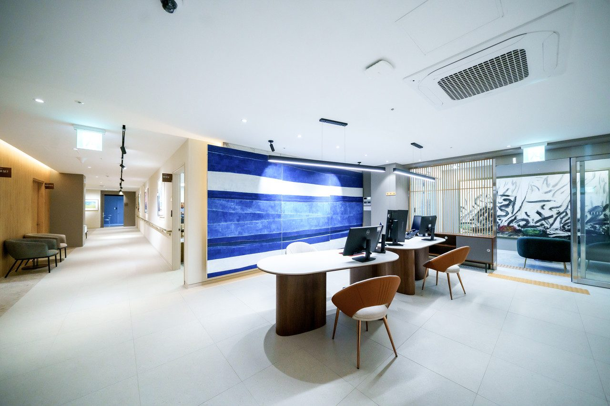
첫 상담은 전화나 카카오톡 채널로 원내 상담실에 하시면 됩니다. 전화 상담만으로 입원을 정하실 수도 있습니다.
입원 상담 때는 받으신 수술 명칭, 관 삽입 여부, 앞으로의 치료 일정을 알려 주시면 됩니다.
방문 상담은 2층 상담실에서 합니다. 치료 일정 담당자와는 처음 한 번 2층 상담실에서 만나시고, 그 후의 치료 일정과 계획은 카카오톡 채널로 주고받습니다.
몸 상태에 따라서는 전화 상담만으로 정하지 않고 방문 상담이나 외래 진료에서 주치의가 먼저 확인한 후 입원을 정하기도 합니다.
병실 고르기
병실은 1인실, 2인실, 4인실이 있고, 1인실은 일반 1인실과 특실, VIP실로 나뉩니다. 그 가운데 1인실을 다수 운영하고 있습니다.
병실마다 개인 화장실과 샤워실, 냉장고, 옷장, TV, 책상이 있고 무선 인터넷을 쓰실 수 있습니다. 개별 온돌난방과 냉난방 에어컨, 공기순환시스템을 갖췄습니다. 세탁기와 건조기를 갖춘 공용세탁실과 전자레인지를 쓰실 수 있는 탕비실이 있습니다.
VIP실
VIP실은 침실과 응접 공간이 나뉘어 있고 소파가 있으며, 보호자용 침대를 추가할 수 있는 상급병실입니다. 병실료는 1일 350,000원입니다.
특실
특실은 상급병실입니다. 병실료는 1일 300,000원입니다.
1인실
바깥과의 접촉을 줄이기 위해 되도록 1인실을 쓰시도록 하고 있습니다. 병실료는 1일 250,000원입니다.
2인실
2인실은 상급병실이고, 환자마다 번호키 옷장이 있습니다. 병실료는 1일 200,000원입니다.


4인실
4인실은 상급병실이 아닌 일반 병실이고, 환자마다 번호키 옷장이 있습니다.


상급병실은 VIP실, 특실, 1인실, 2인실입니다. 병실료는 비급여 항목 안내의 표에서 확인하실 수 있습니다.
병실과 병동에 갖춘 것
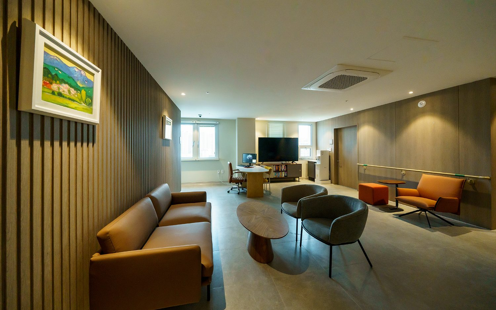
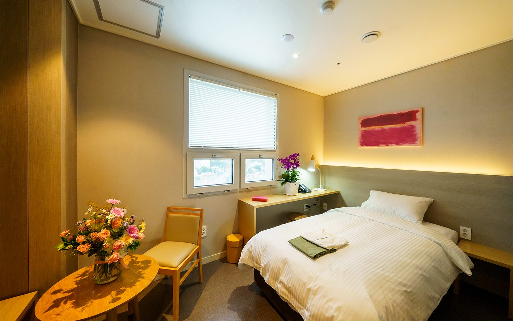
- 침대와 침구를 준비해 편안히 주무실 수 있도록 했습니다
입원 준비와 오시는 날
서류
입원 서류는 소견서 또는 진료기록지 중 하나, 신분증, 피검사 결과지입니다. 소견서를 받기 어려우시면 지금까지의 진료 기록이 담긴 진료기록지만 발급받아 오셔도 됩니다.
진료기록지는 환자가 요청하시면 대학병원·암병원·종합병원 의무기록실에서 발급받는 서류입니다.
드시던 약과 준비물
드시던 약은 정리하지 마시고 봉투째 그대로 가져와 주세요. 다른 병원에서 받아 오신 약은 입원하실 때 알려 주시면 원내 처방과 함께 관리해 드립니다.
준비물은 입원이 확정되면 원내 상담실이 따로 안내합니다. 수건·세탁과 소음·소등 같은 병실 생활 규칙은 입원 상담 때 안내합니다.
입원하시는 날, 발레파킹부터 병실까지
처음 입원하시는 분께는 원내 상담실이 입원 전에 어떻게 오시는지 여쭙고, 오시는 방법을 안내합니다. 도착 시간을 알려 주시면 직원이 미리 기다리고 있다가 발레파킹을 해 드리고, 병실까지 함께 안내합니다. 주차와 발레파킹은 무료입니다.
수술 후나 항암 후처럼 암 치료로 지치신 환자가 안전하고 편안하게 오실 수 있도록 돕습니다. 도착하시는 순간부터 안정감을 느끼실 수 있도록 최선을 다합니다.
안심 픽업 서비스
퇴원하시는 날 수술받으신 병원에서 하일렌요양병원까지 안심 픽업 서비스를 이용하실 수 있습니다. 입원 중 수술병원에 다녀오실 때도 이용하실 수 있습니다. 광주송정역(KTX·SRT)에서 오시면 열차 시각을 미리 알려 주세요.
입원 첫날
입원 첫날에는 서류를 접수하시면 병동 간호사가 가져오신 약과 검사 결과를 기록하고, 주치의 진료와 식사 처방, 병동 안내가 차례로 이어집니다.
입원 첫날 몇 시까지 오시면 되는지, 저녁 늦게 도착해도 접수가 되는지는 미리 원내 상담실에 문의해 주세요.
지내시는 동안
아침에는 병동 간호사가 밤사이 불편한 곳이 없었는지, 잠은 잘 주무셨는지 여쭙습니다. 말씀하신 증상은 주치의에게 보고하고, 주치의가 처방합니다.
낮에는 주치의 처방에 따라 회복치료를 받으십니다. 회복치료는 고주파온열암치료·고압산소치료·재활치료·림프 관리·고용량 비타민C·면역 치료·영양공급수액입니다.
주치의 진료
치료 사이사이의 몸 상태는 하일렌요양병원의 주치의가 진료하며 살핍니다. 필요시 원내에서 혈액검사와 흉부 엑스레이 촬영을 하고, 그 결과를 주치의가 확인합니다.
어디까지 움직여도 되는지는 주치의가 몸 상태를 살피고 환자와 이야기를 나눈 후 함께 정합니다. 수술이나 항암을 계속할지 같은 치료 방향은 지금 다니시는 대학병원·암병원 담당의의 판단을 따릅니다.
식사
항암·방사선 치료 중에는 입맛이 떨어지고 속이 불편해 식사가 어려워지기 쉽습니다. 입원 중 식사는 주치의가 환자 상태에 맞춰 처방하고, 치료식(일반식 · 항암식 · 위절제식 · 저잔사식 · 저염식 · 저요오드식 등) 가운데에서 고릅니다.
일반식
항암식
위절제식
저잔사식
저염식
저요오드식
입원 첫날부터 식사 이야기를 나눕니다. 영양사 3명이 치료식 식단을 짜고, 식사 자리에는 영양컨시어지가 따로 있습니다. 영양컨시어지는 보호자처럼 환자 곁에서 드신 양과 식후 불편한 점을 주기적으로 살핍니다. 식사가 불편하거나 드시는 양이 줄면 주치의에게 보고하고, 주치의가 식사 종류나 밥 형태를 다시 처방합니다.
식사 장소는 스카이라운지 식당이며, 병실에서 받아 드실 수도 있습니다. 보호자 식사도 환자 식사와 함께 주문하실 수 있습니다. 특식데이에 식당까지 오시기 어려우시면 병실에서도 같은 한 끼를 드실 수 있도록 준비해 드립니다.
이번 주 식단표는 카카오톡 채널 소식에서 보실 수 있습니다. 식단은 시장 수급과 영양실 사정에 따라 달라질 수 있습니다.
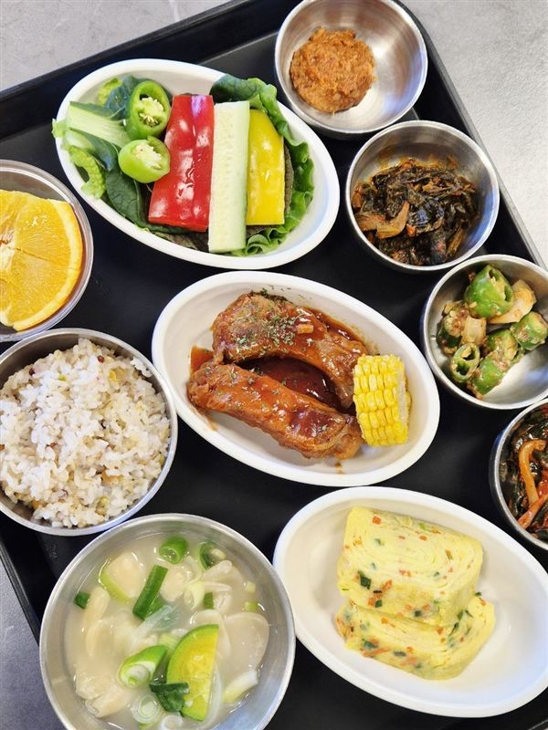
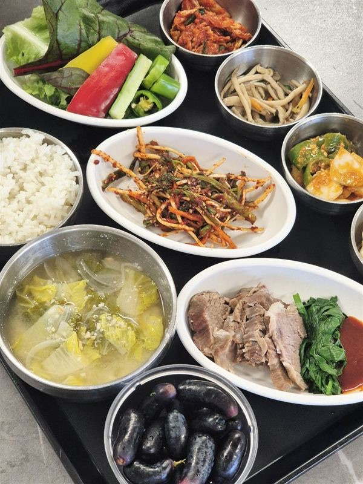
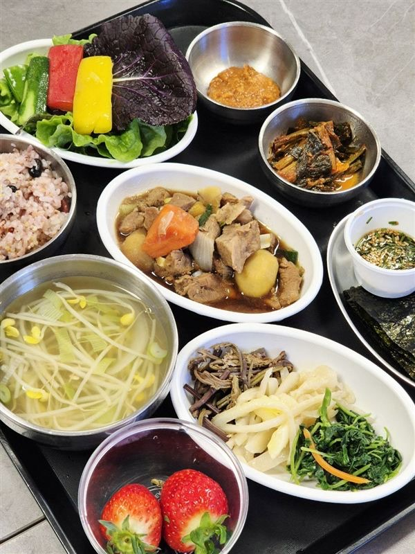
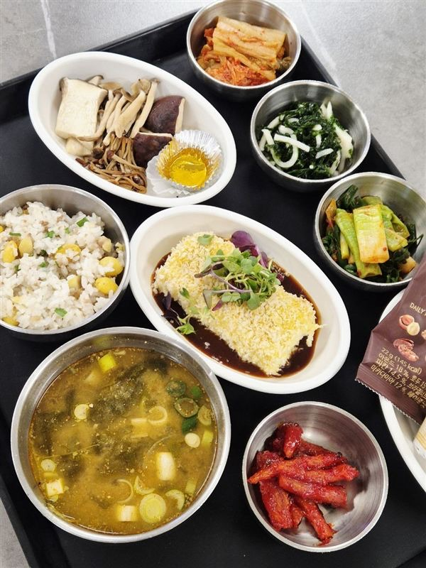
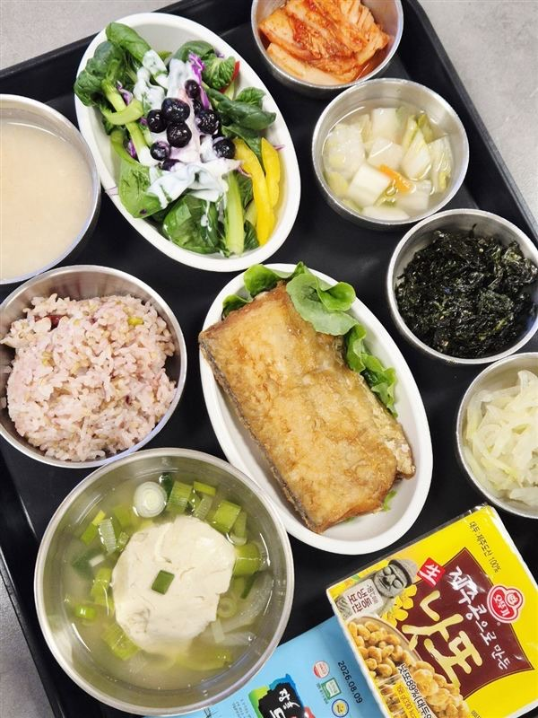
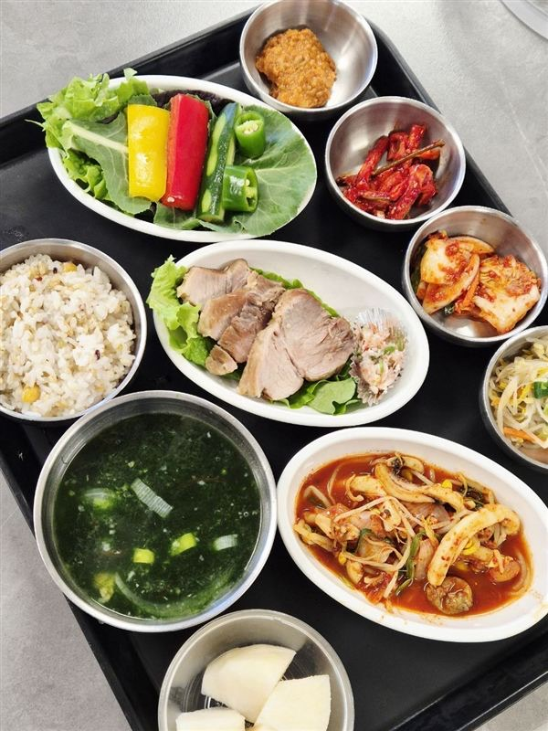
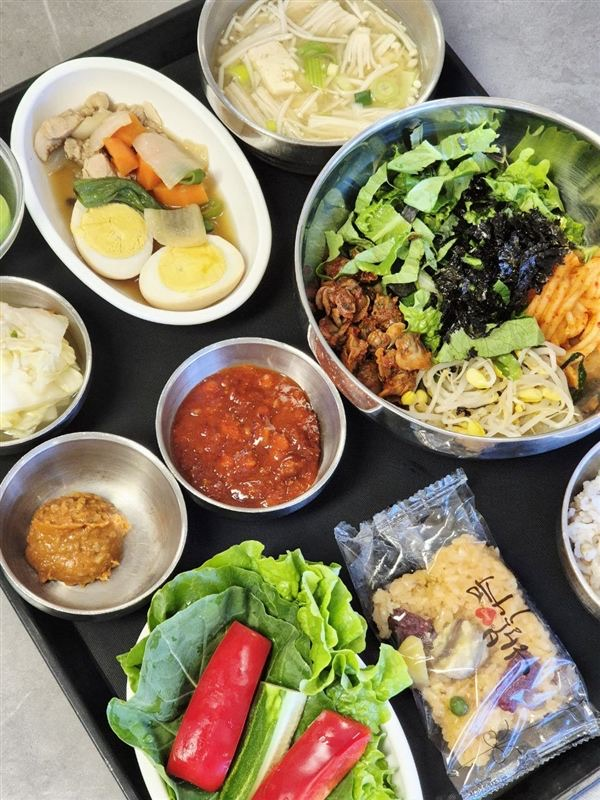
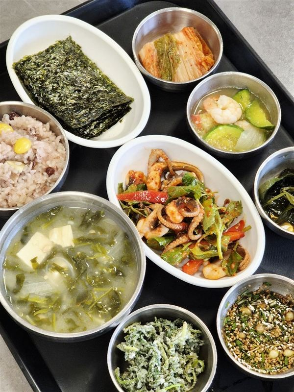
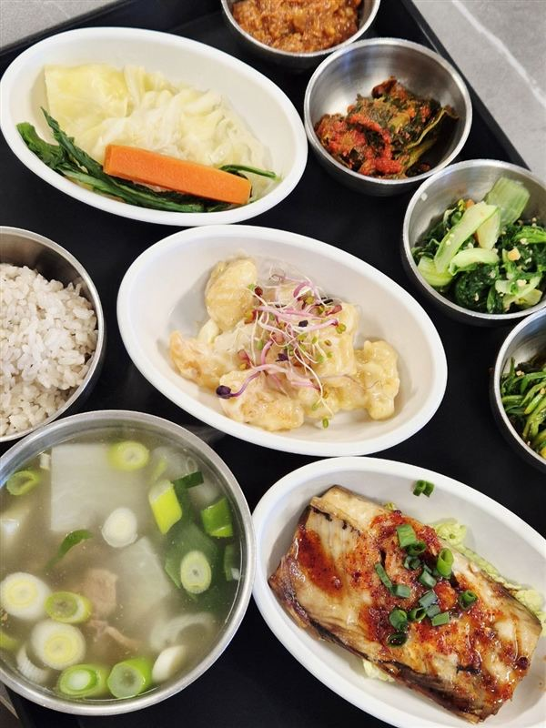
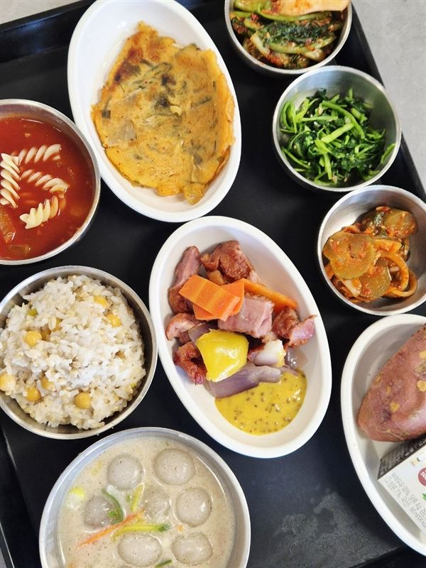
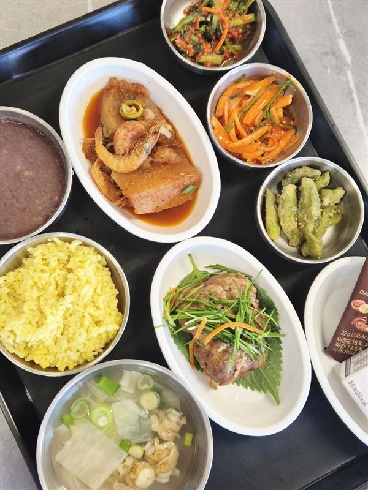
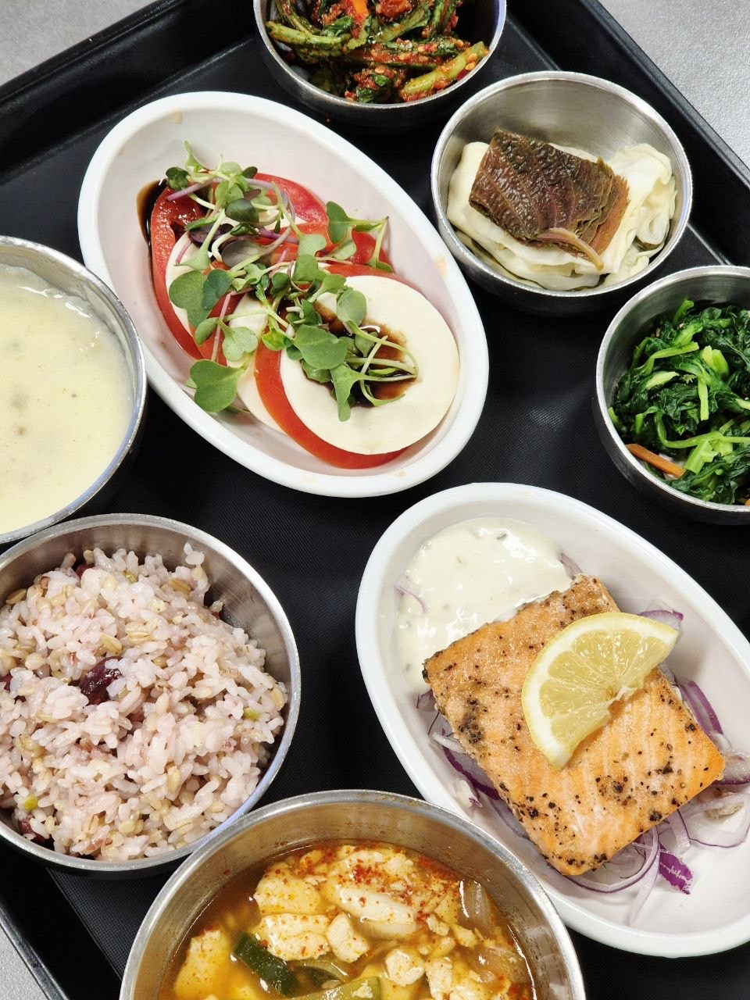
수술 부위 회복 — 간호팀 및 주사·상처관리 전담팀
수술 부위는 수술받으신 병원의 치료 지침에 따라 간호팀과 주사·상처관리 전담팀이 이어서 살펴 드립니다. 소독 여부와 간격은 대학병원·암병원 지침대로 하고, 소독 자체는 원내에서 합니다.
입원 중 케모포트로 들어가는 수액과 약물 투여, 연결 바늘 관리와 소독은 치료 지침에 따라 원내 담당 의사와 주사·상처관리 전담팀 의료진이 관리합니다. 케모포트로 항암제를 맞으시는 중에 입원하시면 케모포트 관리와 제거도 대학병원·암병원 지침에 따라 해 드립니다.
힐링 프로그램
힐링 프로그램은 명상, 요가, 라인댄스, 캘리그래피, 뜨개공방, 매듭공예, 천연공방, 차 다도, 주말영화, 편백숲 트레킹, 암기공 열한 가지입니다. 입원 환자는 병동 간호사실에, 외래 환자는 카카오톡 채널이나 원내 상담실에 신청하시면 됩니다. 외래 진료로 오셔도 참여하실 수 있습니다.
요일과 시간은 달마다 바뀌어 월별 공지로 안내합니다. 참여하실 수 있는 프로그램은 몸 상태에 따라 다르므로 참여 전에 담당 의료진과 상의해 주세요. 힘든 날은 쉬셔도 됩니다. 오후 2시 30분 암재활 운동치료는 주치의 처방으로 받으십니다.
원내 시설
이용하실 수 있는 시설은 1층 갤러리(면회 장소), 2층 온열암치료실·통증치료실과 회복 정원·황토 어싱장, 3층 암재활치료실(통증·재활·림프·레이저치료실), 9층 외래센터 블룸(면역주사실·세라젬 의료용 안마기·소금편백찜질방), 10층 스카이라운지 식당·힐링프로그램실·기도실입니다. 층마다 쓰임은 치료실 안내의 층별 안내에서 보실 수 있습니다.
면회
면회 기준과 주소·교통은 오시는 길·면회 안내에서 확인하실 수 있습니다.

대학병원·암병원에 다녀오실 때
입원 중에도 대학병원·암병원 외래 일정은 그대로 이어 갑니다. 외래 날이 오면 그날 다녀오시고 다시 병실로 돌아와 회복을 이어 가시면 됩니다.
외래 날짜가 정해지거나 바뀌면 늦어도 전날까지는 병동 간호사에게 알려 주세요. 외래 전날에 병동 간호사가 다음 날 대학병원·암병원에 가실 분의 명단을 확인합니다.
대학병원·암병원에서 돌아오시면 그날 들으신 검사 결과와 받아 오신 약, 다음 일정을 병동 간호사에게 알려 주세요. 병동 간호사가 적어 두고, 주치의가 원내 처방과 묶어 관리합니다.
회복하시는 동안 대학병원·암병원 진료가 필요하다고 보이면 안내합니다. 이동과 교통편이 궁금하시면 병원으로 문의해 주세요.
밤사이와 응급 상황
의료진이 24시간 상주합니다. 밤에 열이 나거나 몸 상태가 달라지면 병동 간호사에게 말씀해 주세요. 병동 간호사가 주치의에게 보고하고, 당직 의료진이 확인해 처방합니다.
입원 중 열이 나면 환자 상태에 따라 필요시 혈액검사와 흉부 엑스레이 촬영을 하고, 그 결과를 주치의가 확인합니다. 검사 결과에 따라 초기 안정화 조치를 하고 지금 항암 치료 중인 대학병원·암병원과 상의해 추가 치료를 진행합니다. 필요하면 대학병원·암병원으로 신속히 전원합니다.
하일렌요양병원에는 자체 응급실이 없습니다. 응급 상황이 생기면 담당 주치의 또는 당직의가 환자 상태를 확인한 후 응급 처치를 시행하고, 지금 치료받으시는 대학병원·암병원으로 전원할지 결정합니다.
입원 기간과 퇴원
모든 분께 똑같이 정해진 기간은 없습니다. 단기입원은 치료 일정에 맞춰 이용하실 수 있고, 기간은 대학병원·암병원에서 잡아 준 일정과 지금 몸 상태·드시는 양, 집에서 지낼 여건을 보고 주치의가 진료에서 환자와 상의해 정합니다.
한 번 정한 기간도 치료 일정이나 몸 상태가 달라지면 주치의와 상의해 다시 맞추실 수 있습니다. 지내 보시고 늘리거나 앞당겨 퇴원하실 수도 있습니다. 입원 일정 상담은 원내 상담실에서 안내합니다.
자주 묻는 질문
혼자 걷기 힘들어도 입원할 수 있나요?
혼자 걷기 힘드시면 입원이 될지 걱정되실 겁니다. 수술 직후나 항암 후 며칠처럼 지나가는 상태라서 혼자 걷기 힘드신 것이라면 그 며칠 동안 회복 입원을 하실 수 있습니다. 도와 드릴 사람이 늘 곁에 있어야 하는지는 먼저 상담에서 함께 살펴봅니다.
보호자 없이 입원할 수 있나요?
네, 혼자 생활하실 수 있으면 보호자 없이 입원하셔도 됩니다. 보호자께서 곁에 계시지 않아도 의료진이 24시간 상주합니다. 보호자께서 함께 지내시려면 특실이나 1인실을 쓰시면 되고, 보호자께서 함께하실지와 원하시는 병실은 입원 전에 원내 상담실이 미리 여쭙습니다. 보호자 식사도 환자 식사와 함께 주문하실 수 있습니다.
입원 자리가 없으면 어떻게 하나요?
원하시는 날에 들어가실 1인실이 비어 있지 않을 때는 자리가 없다고 있는 그대로 말씀드립니다. 그럴 때는 외래 진료부터 시작하시는 방법도 있습니다.
1인실 비용은 하루 얼마인가요?
1인실 병실료는 1일 250,000원이며, 건강보험이 적용되지 않아 전액 본인 부담입니다. 입원 기간과 받으실 치료에 따라 달라지는 전체 비용은 원내 상담실에서 전화나 카카오톡 채널로 안내합니다.
지금 먹는 약을 가져가도 되나요?
네. 혈압약·당뇨약처럼 늘 드시는 약이 여러 가지여도 입원하실 수 있습니다. 약은 정리하지 마시고 봉투째 그대로 가져와 주세요. 병동 간호사가 약 이름·드시는 방법·남은 일수를 적어 두고, 주치의는 그 기록을 원내 처방과 나란히 놓고 봅니다. 당뇨가 있는 분은 입원 중 병동에서 혈당을 재어 주치의에게 알리고, 인슐린을 쓰시는 분은 그 결과를 본 주치의가 용량을 그때그때 정합니다.
방사선 치료를 매일 다니면서 입원할 수 있나요?
방사선 치료는 지금 다니시는 대학병원·암병원에서 그대로 받으시고, 하일렌요양병원은 입원과 외래 진료로 피부 상태와 방사선 치료로 인해 발생한 피로 등 증상을 관리합니다. 입원 중에 대학병원·암병원 외래나 치료 날이 오면 그날 다녀오시고 다시 병실로 돌아와 회복을 이어 가시면 됩니다. 치료일의 이동과 교통편은 병원으로 문의해 주세요.
카카오톡 채널을 추가하시면 준비물부터 절차, 안심 픽업 서비스, 시설, 힐링 프로그램 참여 방법까지 한 번에 받으실 수 있습니다.
입원 상담과 예약은 원내 상담실에서 도와 드립니다.
제공 하일렌요양병원 · 갱신 2026-11-14